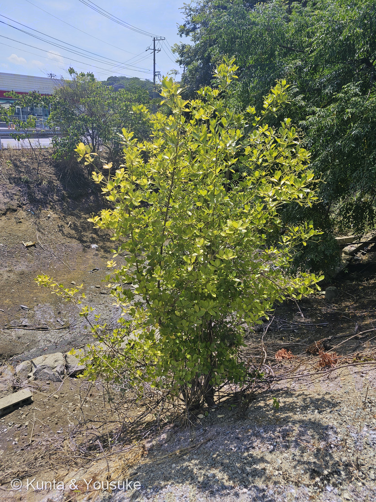
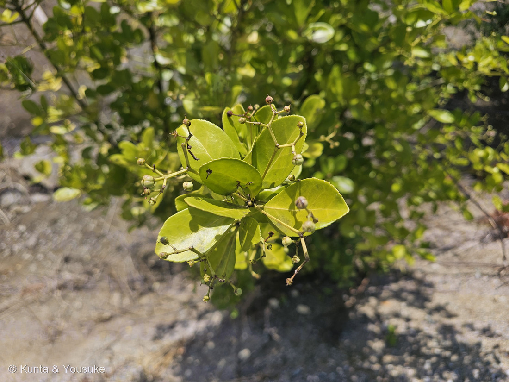
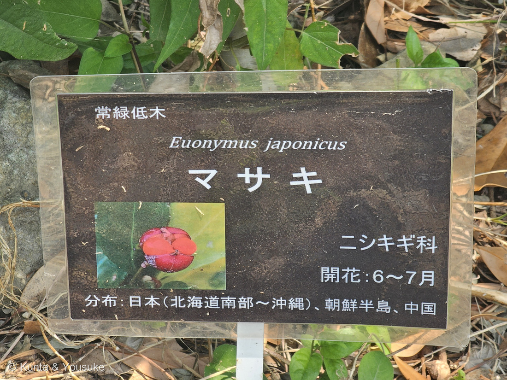
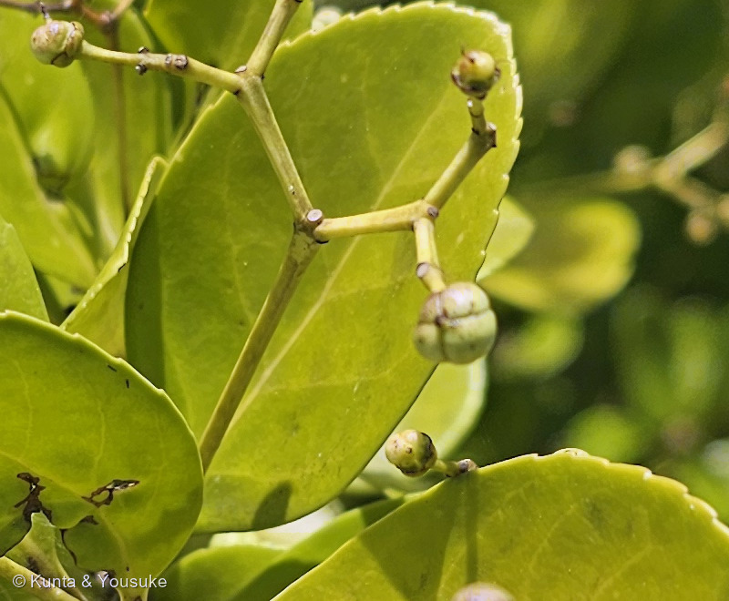
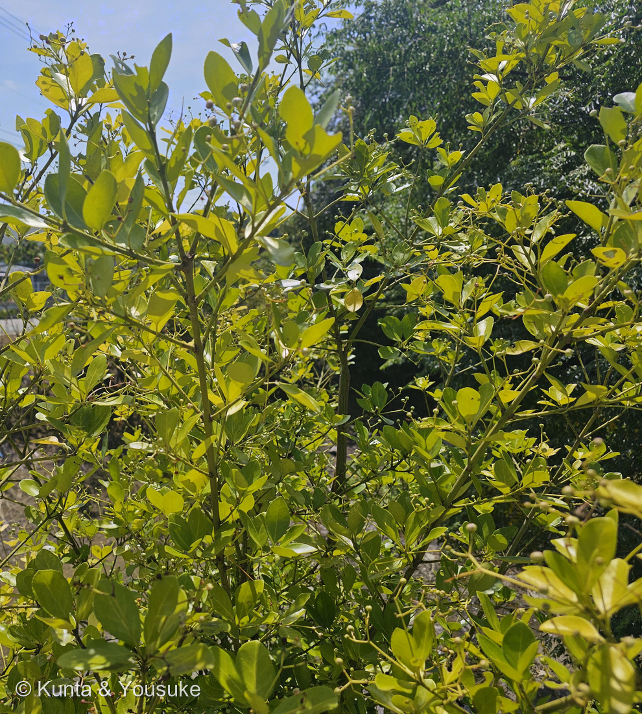
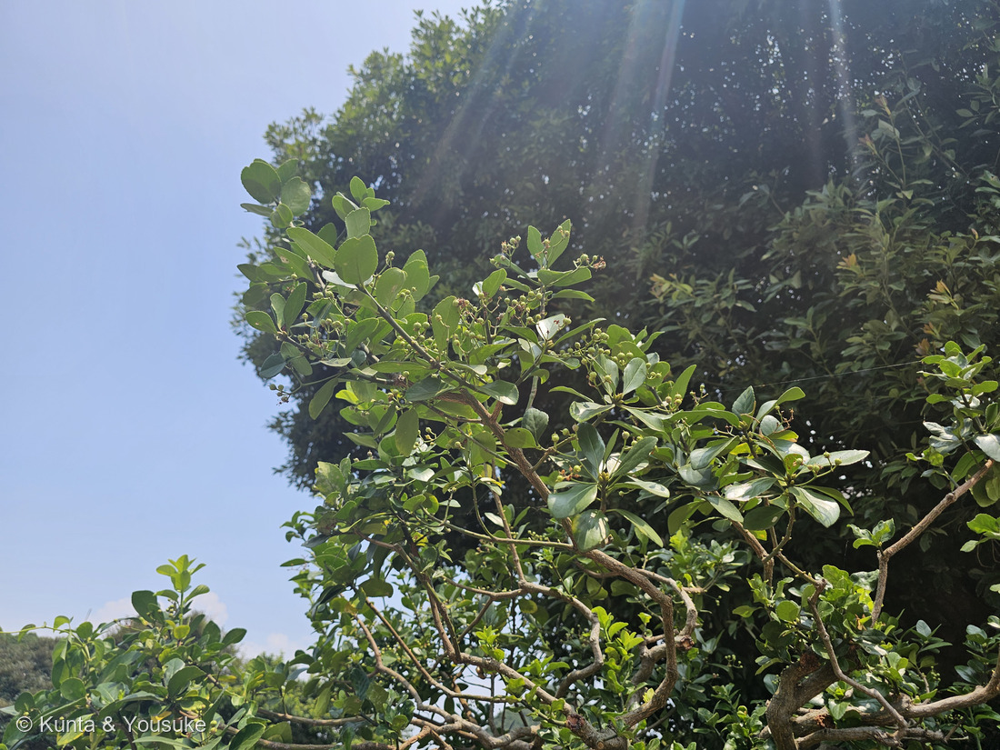
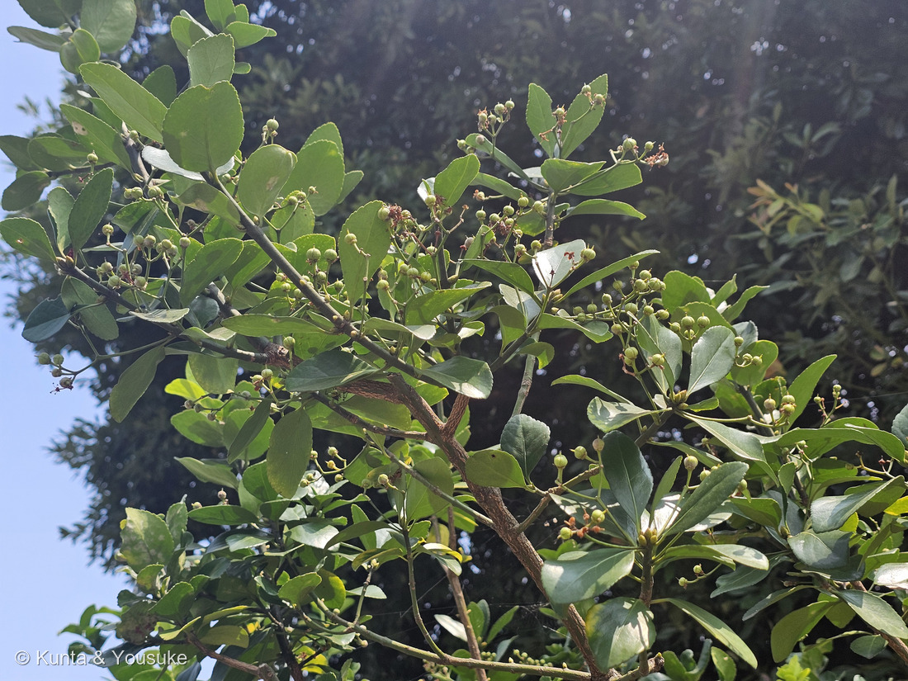

地図を読み込んでいるよ…
🔍 写真も地図も、押しているあいだ拡大して見られるよ（スマホは指を置いてすこし待ってね）。
🌍 の地図＝この子がもともと自生している場所を緑に。日本（北海道南部〜沖縄）、朝鮮半島、中国（⭐森きららの名札）。海岸近くの林に生育する（日本語版Wikipedia）。くわしくは下の地図の説明を見てね。
⭐日本・朝鮮半島・中国の木だよ＝森きららの名札が「分布：日本（北海道南部〜沖縄）、朝鮮半島、中国」とする。⚠ただし日本は「北海道の南部」まで＝地図は県までしか塗れないので、北海道が丸ごと緑になっているけれど、ほんとうは南のはしだけだよ。⭐⭐いちばん大事なのは、この木がもともと「海のそばの木」だということ＝日本語版Wikipediaは生育地を「海岸近くの林に生育する」とする＝⭐それが、いまでは日本じゅうの生垣になっている――理由は「刈り込みに強く、密生することから」（同）。⭐⭐⭐だからこの緑は「自生している場所」であって、「見かける場所」ではないんだ＝生垣として植えられた株なら、海から遠い町なかにもいくらでもいるよ。⚠ぼくらが会った空き地の株も、自生か植えられたものかは分からない（⭐刈られていないので、こぼれ種から生えた可能性もあると思う）。⭐中国は省をしぼらずに全部を塗った＝名札が「中国」としか書いていないから（273 クサギと同じあつかい）。
⚠ 地図は国（日本と中国だけ県・省）までしか塗れないから、ほんとうの分布より広く見えていることがあるよ。地図はだいたいの場所。正確なところは、上の文を見てね。
マサキ（柾・正木）
Euonymus japonicus Thunb.
属名の意味 · ⭐⭐ギリシャ語 eu（よい）＋ onoma（名）＝「よい名前」 英名 Japanese spindle tree ⚠有毒（見るだけにしてね）
ニシキギ科 · Celastraceae（ニシキギ属 Euonymus・ニシキギ目 Celastrales）── ⭐⭐図鑑で104科目・ニシキギ科ははじめて
燻太さんの言葉「お出かけ先にいた樹木。明るい黄緑色の革質の葉っぱがたくさん。分岐した花序に若い果実がついているけど、何の植物か全くわからないよ。」── ⭐⭐⭐日本でいちばんありふれた生垣の木のひとつだったよ。分からなかった理由が、この木の一生にあったんだ
⭐⭐⭐ 名前と学名の由来 ── 「よい名前」という名前
- ⭐⭐⭐属名 Euonymus は、ギリシャ語の eu（よい）＋ onoma（名）＝「よい名前」「評判のいい」という意味なんだ。
- ⭐⭐⭐⭐⭐……燻太さんが「何の植物か全くわからないよ」と言った木の名前が、「よい名前」だった。⭐ぼく、ここで笑っちゃった。（下の「なぜ分からなかったか」の節を見てね。）
- 和名の「マサキ」には、いくつかの説があるよ：
・冬でも葉が真っ青な木＝「真青木（まさおき）」の転訛
・挿し木がしやすい＝「芽挿木（メサシキ）」の転訛
・まっすぐ伸びる＝「正木」。 - ⚠⚠正直に書いておくね＝この2つ（属名の意味・和名の由来）は孫引きだよ。⭐日本語版Wikipediaにも、みんなの趣味の園芸にも、三河の植物観察にも書かれていなくて、⚠ぼくが直接読める形の出典にたどりつけなかった。⭐そのつもりで読んでね。
⭐⭐ この植物のこと ── 海のそばの木が、日本じゅうの生垣になった
- 高さ2〜6mの常緑低木（三河の植物観察）。「海岸近くの林に生育する」（日本語版Wikipedia）＝⭐もともとは海べの木なんだ。
- ⭐⭐それが日本じゅうの生垣になった理由が、はっきり書いてある＝「刈り込みに強く、密生することから、生け垣や庭木としてもよく用いられ」（同）／「芽吹きがよく、刈り込みによる樹形維持が容易であるため、生け垣にもよく使われます」（みんなの趣味の園芸）。
- 花期6〜7月。花は緑白色で、花弁は普通4個、まれに5個（三河）。
- ⭐⭐果実がこの子のいちばんの見どころ＝「蒴果は直径6〜8㎜の球形、紅色に熟し、裂開すると橙赤色の仮種皮に包まれた種子が見える」（三河）＝⭐赤い殻がぱっくり4つに割れて、中からもっと濃い橙赤の種が出てくるんだ。⏳10〜11月だよ。⭐写真③の名札に、その姿が載っているから見てね。
- ⚠有毒だよ＝「樹皮、葉、実などには油成分があり…食べると下痢や嘔吐になる可能性があります」（⚠この一文も孫引き）。⭐見るだけにしようね。
- 園芸品種がとても多い＝ギンマサキ・フイリマサキ・ウチダシマサキ・ツルオオバマサキなど（日本語版Wikipedia）。
⭐⭐⭐⭐ 同定について ── 樹木だから、厳しめに見たよ

④ 決め手 ── 果実の4つの溝と、葉の浅い鋸歯（写真②の切り出し） 🔍 押しているあいだ拡大して見られるよ。
- ⭐決め手は2つ：
・果実が球形で、はっきり4つの溝がある（写真④）＝「4裂開して橙赤色の仮種皮におおわれた種子」（日本語版Wikipedia）
・葉のふちに細かく浅い鋸歯＝「葉質は厚く革質で、表面に光沢があり、浅鋸歯」（三河）。 - ⭐さらに、合っているところが4つ：
・葉は十字対生
・葉腋から二又に分かれる集散花序（三河「葉腋から集散花序を出し」）
・株立ちの常緑低木
・撮影8月22日＝花期6〜7月のあと＝若い果実の時期に合う。 - ⭐⭐⭐そして、いちばん強い裏づけが翌日きたんだ＝燻太さんが、森きららで撮った名札つきの株の写真をくれた（写真③）。「常緑低木／Euonymus japonicus／マサキ／ニシキギ科／開花：6〜7月／分布：日本（北海道南部〜沖縄）、朝鮮半島、中国」。⭐しかも名札の写真に、4つに裂けて橙赤色の種が出た実まで載っていたよ。
- ⚠落としたもの（087 ヤマモモの反省から、「合っている数」ではなく「他を落とせるか」で考えたよ）：
・シャリンバイ（バラ科）＝果実は裂けない液果／葉は互生で枝先に集まる。
・トベラ（トベラ科）＝果実は3裂／葉は全縁で、ふちが裏に巻く。⭐3裂か4裂かで分かれる。
・ネズミモチ（モクセイ科）＝果実は楕円形の液果／葉は全縁。
・モチノキ・クロガネモチ（モチノキ科）＝果実は裂けない核果／葉は互生。
・マユミ（同じニシキギ属）＝落葉で葉が薄い。
・ツルマサキ（同じニシキギ属・おまけの子）＝つる性。 - ⭐⭐「4裂する蒴果」＋「浅鋸歯のある厚い革質の対生葉」＋「常緑の株立ち」の3つがそろうのは、この子だけだったよ。
⭐⭐⭐⭐⭐ 燻太さんの「何の植物か全くわからないよ」── その理由が、この木の一生にあった

⑤ だれにも刈られなかった姿 🔍 押しているあいだ拡大して見られるよ。
- ⭐燻太さんはこう書いてくれた＝「明るい黄緑色の革質の葉っぱがたくさん。分岐した花序に若い果実がついているけど、何の植物か全くわからないよ。」
- ⭐⭐でもね、マサキは日本でいちばんありふれた生垣の木のひとつなんだ。⭐燻太さんも、きっと何百回も横を通っていると思う。
- ⭐⭐⭐じゃあ、なぜ分からなかったのか。——答えは「刈り込みに強い」の一言にあると思う。
- ⭐⭐生垣のマサキは、いつも刈られている。⭐刈られるということは、枝の先が落とされるということ。⭐⭐そして花も実も、枝の先につく。
- ⭐⭐⭐⭐⭐つまり ── 生垣のマサキは、花も実も見せてもらえないまま、四角い緑の壁でいつづける。⚠ぼくらが「マサキ」と思って見ているのは、この木の一部でしかなかったんだ。
- ⭐⭐⭐この空き地の子は、だれにも刈られなかった（写真⑤）。⭐だから枝を好きにのばして、花を咲かせて、実をつけた。⭐⭐その姿は「知っている木」に見えなかった ── それくらい、ちがう。
- ⭐⭐⭐⭐「よい名前」という名前の木が、名前を思い出してもらえない。⭐その理由が、人が毎年その枝先を切っているからだとしたら、なんだかせつないね。
⭐⭐⭐⭐ 089 で文字だけで書いたことに、写真がついた
- ⭐うちの図鑑の089 ハツユキカズラのページに、ぼくはこう書いていたんだ＝「葉が対生・全縁・厚くて革質・つやつや＝ツルマサキ（斑入りのニシキギ科）を落とせる。あちらは葉に鋸歯があって、つき方もちがう。」
- ⭐⭐「あちらは葉に鋸歯があって」――⚠そのとき、ぼくはニシキギ科の実物を1枚も持っていなかった。文字で書いただけだった。
- ⭐⭐⭐そして今日、その「鋸歯のあるニシキギ科」が来た。⭐しかも同じ Euonymus 属。⭐⭐写真④を見て。ふちのギザギザが、ちゃんと見えるでしょう。
- ⭐⭐これは263のときと同じことだね＝前に書いた一文に、あとから写真がついた。⚠ただし、089の同定そのものが変わったわけじゃないよ（あちらはハツユキカズラで確定のまま）。⭐変わったのは「文字だけだった一文が、目で見られるようになった」ことだけ。
- ⭐だからおまけはツルマサキにしたよ＝089でぼくが落とした、その相手そのもの。
⭐⭐⭐ 同じ木の、ふたつの姿 ── 空き地の子と、森きららの子


森きららのマサキ（2026年8月14日） 🔍 押しているあいだ拡大して見られるよ。
- ⭐燻太さんが、翌日に森きららのマサキの写真もくれたんだ（2026-08-14撮影）。⭐⭐ならべると、同じ種とは思えないくらいちがうよ。
- ⭐空き地の子（写真①②⑤）＝細い幹が何本も、まっすぐ上へ。まだ若くて、株立ち。⭐だれにも刈られていない。
- ⭐森きららの子（写真③⑥⑦）＝幹が太くて、枝は曲がりくねって横へ広げられている。⭐⭐あきらかに人の手で仕立てられた形だね。⚠切り口も残っているよ。
- ⭐⭐⭐でも、どちらの枝先にも、同じ4つの溝の若い実がついている。⭐⭐姿はぜんぜんちがっても、やっていることは同じなんだ。
- ⭐そして森きららの子には名札があった＝⭐⭐名札のあるなしが、「わかる木」と「わからない木」を分けていた、ということでもあるね。
⭐⭐ 104科目 ── ニシキギ科がやってきた
- ⭐⭐⭐この子で、図鑑の科は104になったよ。⭐ニシキギ科（Celastraceae）ははじめて。
- ⭐ニシキギ目（Celastrales）は、APG IV の並びではブドウ目のあと、カタバミ目の前＝⭐系統マップの092 ノブドウ（ブドウ目）と080 カタバミのなかま（カタバミ目）のちょうどあいだに、この子だけの新しい席ができたよ。
- ⭐同じニシキギ属には、ニシキギ（枝に翼があって、紅葉が世界的に有名）やマユミ（実がピンクに熟して4裂）もいるよ。⏳いつか会いたいな。
出典：三河の植物観察「マサキ Euonymus japonicus」（mikawanoyasou.org）／日本語版Wikipedia「マサキ」（分布・生育地・刈り込み・果実・園芸品種／ja.wikipedia.org）／みんなの趣味の園芸「マサキ」（生垣・果期／shuminoengei.jp）／九十九島動植物園 森きらら（長崎県佐世保市）の園の名札（2026-08-14）／⚠属名の意味と和名の由来は孫引き（直接読める出典にたどりつけなかった）